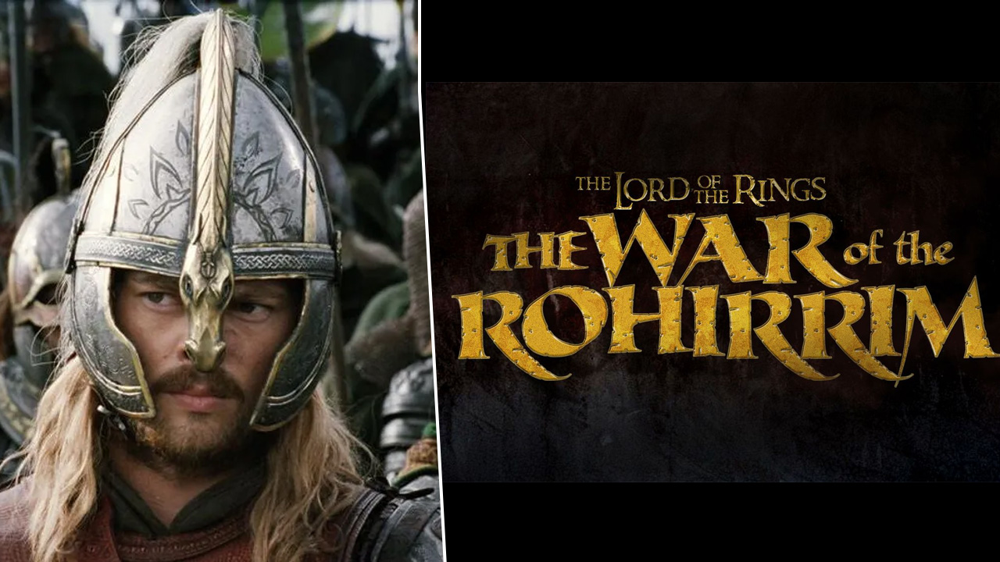
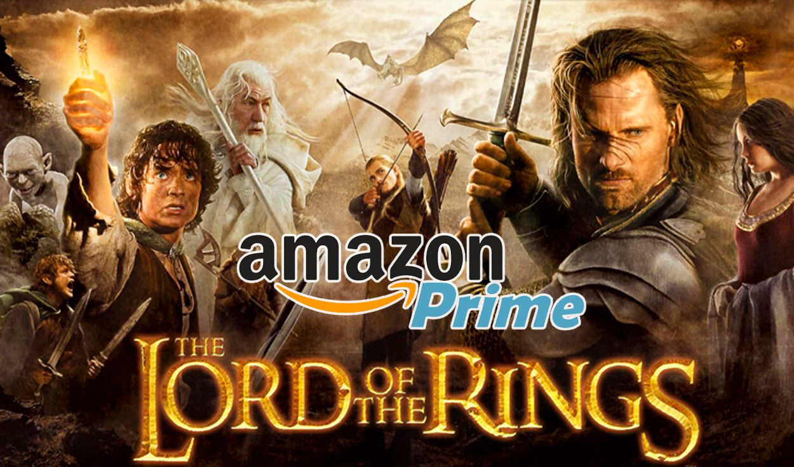

Warner prepara 'The War of the Rohirrim', un anime sobre el abismo de Helm.
La batalla por la Tierra Media en cine y televisión arranca con Warner Bros. poniéndose a desarrollar junto a New Line Cinema esquejes de 'El señor de los Anillos' antes de que Amazon lance su serie. La compañía ha anunciado que ha dado luz verde a 'The War of the Rohirrim', una precuela animada de las películas de Peter Jackson. Los hechos, descritos por J.R.R. Tolkien en 'Las dos Torres', sucedieron unos 260 años antes de la Guerra del Anillo de las películas. El guion corre a cargo de Jeffrey Addiss y Will Matthews y, de algún modo, la película será cohesiva con las seis películas de Peter Jackson. Lord of the Rings: The War of Rohirrim es un golpe en la mesa por parte de Warner, quien no quiere dejar escapar del todo la mina de oro que es la Tierra Media ahora que Amazon está construyendo la ambiciosa serie. Afortunadamente para todos nosotros hay historias para aburrir que no se han llevado a la pantalla y las eras que van a manejar están lo suficientemente separadas como para explorar a gusto sin meterse en el terreno del otro.
El Señor de los Anillos: revelan posible fecha de lanzamiento de la serie de Amazon
¿Quieren volver a la Tierra Media? Amazon amaría saber que sí, porque tiene tiene una serie de proyectos en camino relacionados con la franquicia que surgió de la historia creada por J.R.R. Tolkien , y no le gustaría que los cientos de millones de dólares que invirtió para lo que se podrá ver en su plataforma de streaming no le den los resultados esperados. En las últimas semanas no hemos dejado de escuchar novedades sobre la serie de El Señor de los Anillos que está preparando la compañía, y uno de los recientes rumores tiene que ver, finalmente, con la fecha en la que se estrenará su primera temporada. Recientemente empezó a compartirse un rumor en Twitter donde una cuenta fan de El Señor de los Anillos asegura que el estreno de la serie llegará muy pronto. Según LOTR FRANCE, la campaña de marketing de Amazon para promocionar la serie empezará entre octubre y noviembre de este año, aclarando que aún se está esperando la confirmación, y que la primera temporada de la serie llegará en algún punto durante el primer trimestre de 2022.
Mapa de la tierra media segun la serie de Amazon
Uno de los proyectos más esperados por los aficionados a la fantasía medieval está comenzando
a cobrar forma. El señor de los anillos ya tuvo una mítica adaptación en el cine gracias a
la trilogía de Peter Jackson. Desde Amazon parece que no quieren que se extinga la llama y
por eso están preparando un proyecto en forma de serie para su plataforma.
Esta noticia de comenzar con este proyecto no es novedad, pero recientemente se habrían
revelado algunas herramientas para avanzar en él. A través de twitter se habría creado una
cuenta propia para la serie llamada The Lord of the Rings on Prime y una página web sobre
ello. Os dejamos a continuación el tweet donde lo han revelado.
🗺️ 🔍 Explore the map: https://t.co/z9WOqI9Seo
— The Lord of the Rings on Prime (@LOTRonPrime) February 15, 2019